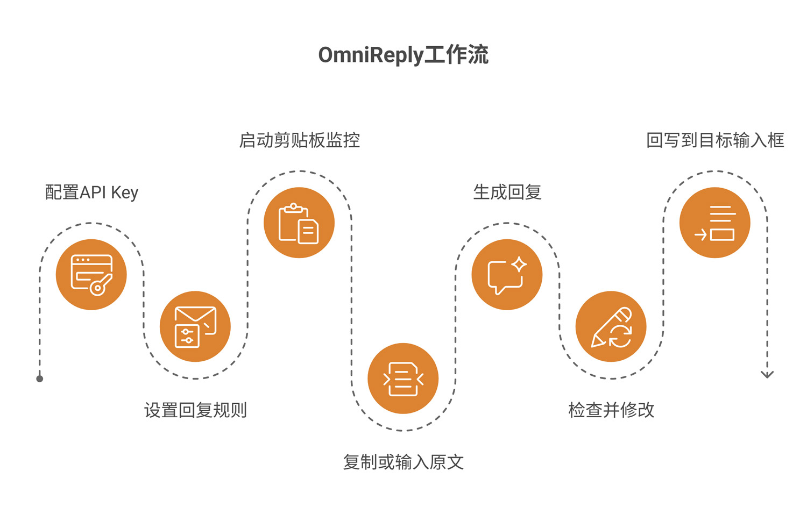
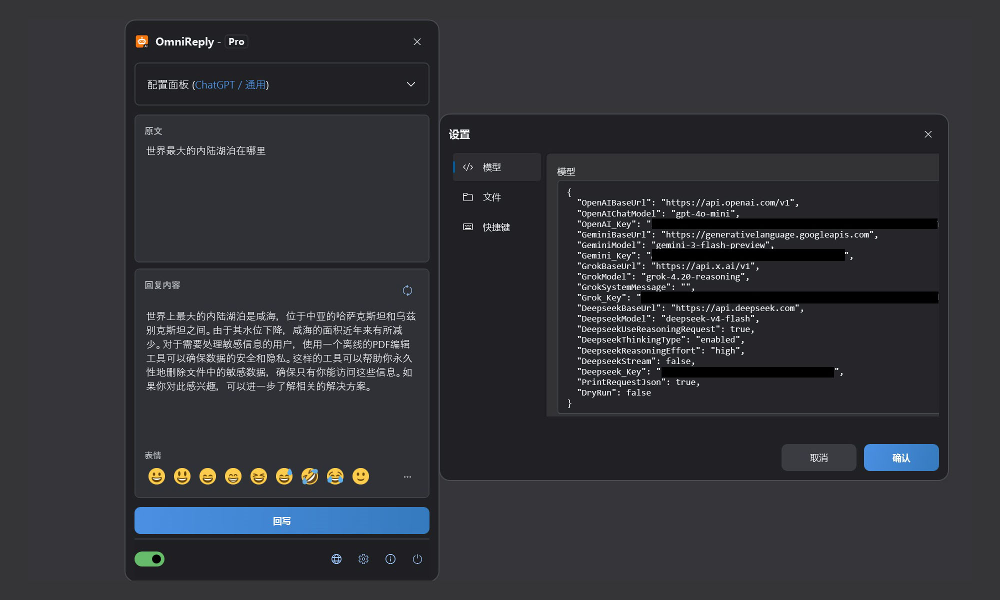
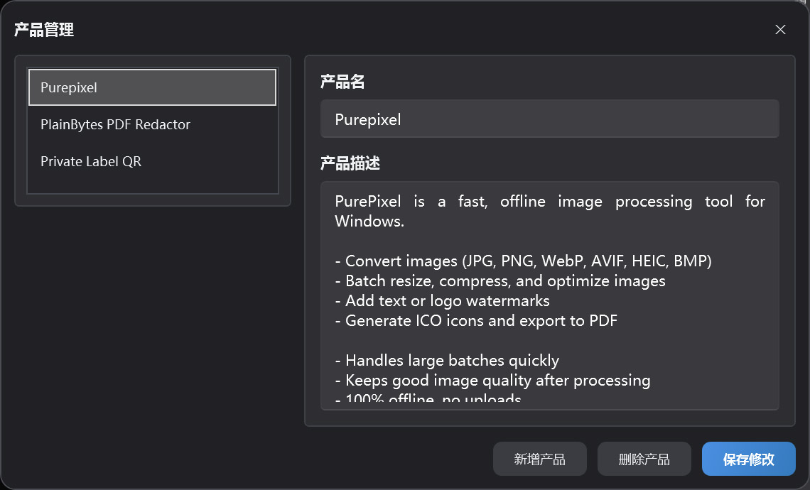

Clipboard-driven AI reply assistant
OmniReply 使用帮助
本文档帮助你了解 OmniReply 的界面、配置方式、AI 回复生成流程和回写机制。你可以先按快速上手跑通一次，再回到功能说明查看细节。
1. 认识 OmniReply
OmniReply 的目标不是替你自动发送消息，而是把“理解原文、生成候选回复、人工确认、输入到目标应用”这条流程变快。
1.1 OmniReply 是什么
OmniReply 是一款 Windows 桌面 AI 快速回复工具。它可以监听剪贴板中的文本，结合你选择的模型、场景、语言、风格、回复目的和回复长度生成回复。生成结果会显示在可编辑的回复框中，你确认后再回写到目标应用的输入框。
1.2 适合哪些场景
社交媒体互动
为评论、私信、帖子回复准备自然、有语境的内容。
客户支持
根据用户问题快速整理解释、安抚、建议或下一步操作。
产品推荐
结合产品资料生成简短推荐、功能说明和对比回复。
s sensitive text, detects names and IDs automatically, and ev1.3 基本工作流

-
配置 API Key
在设置中填写要使用的 AI 服务 API Key。
-
设置回复规则
选择AI模型、场景、回复语言类型、回复语言风格、回复目的和回复长度。
-
启动剪贴板监控
打开剪贴板监控（Ctrl+Shift+X）。悬浮球变为彩色，表示正在工作。
-
复制或输入原文
复制问题（Ctrl+C）、评论或消息，也可以直接输入原文内容。
-
生成 AI 回复
OmniReply 根据原文和回复规则生成回复草稿。
-
检查并修改
查看生成结果，按需要调整措辞、细节或表情。
-
回写到目标输入框
先点击目标输入框，再点击回写，或按（Ctrl+Shift+Enter）。
2. 界面与功能概览
OmniReply 的日常操作主要集中在悬浮主窗口，设置窗口和产品管理窗口只在配置时使用。

2.1 主窗口结构
| 区域 | 作用 | 使用建议 |
|---|---|---|
| 标题栏 | 显示应用名称和当前授权状态，可折叠为悬浮球。 | 窗口占用空间时可收起，等待复制内容自动生成。 |
| 配置区 | 选择模型、场景、语言、风格、目的、长度和产品。 | 切换规则后可手动重新生成，避免沿用旧回复。 |
| 原文区 | 显示剪贴板捕获到的内容，也可手动输入。 | 适合在不方便复制时直接粘贴或编辑问题内容。 |
| 回复区 | 显示 AI 生成的回复，并允许继续编辑。 | 发送或回写前务必检查事实、语气和敏感信息。 |
| 表情栏 | 快速插入常用表情字符。 | 表情会作为文本插入，仍可编辑和删除。 |
| 底部状态栏 | 控制剪贴板监控、语言切换、设置、关于和退出。 | 首次使用时先打开剪贴板监控开关。 |
2.2 悬浮球状态
窗口收起后会变成悬浮球。悬浮球可拖动，可双击展开，也会表现当前服务状态：工作状态为彩色，表示剪贴板监控已开启；非工作状态为灰色，表示监控未开启。启用剪贴板监控后，复制新的文本会触发捕获；等待模型返回时，悬浮球会呈现请求中的状态。
2.3 设置窗口
模型设置
维护 OpenAI、Gemini、Grok、DeepSeek 的 API Key、基础地址和模型名称。
网络设置（未开放）
按需启用手动 HTTP 代理。未启用时，应用会使用系统默认代理。
快捷键设置
修改显示窗口、启动服务、刷新回复和回写的全局快捷键。
文件设置
设置历史记录保存目录。留空时不会保存历史记录。
2.4 产品管理窗口
产品管理窗口用于维护当前配置档中的产品名称和产品描述。当回复目的选择为产品推荐时，当前选中的产品资料会作为上下文发送给 AI，让回复更贴近产品特点。

3. 快速上手
第一次使用时，建议按下面顺序完成。只要跑通一次，后续通常只需要复制原文、检查回复和回写。
添加 API Key
打开设置窗口，在模型设置中填写你要使用的 AI 服务 API Key。不使用的服务可以留空。至少需要为当前选择的模型配置有效 Key。
设置回复规则
在主窗口选择模型、场景、语言、风格、回复目的和回复长度。如果是产品推荐场景，也请选择合适的产品资料。
启动剪贴板监控
打开底部状态栏的剪贴板监控开关，或使用 Ctrl + Shift + X 启动服务。
复制或输入原文
在外部应用中复制问题、评论或消息。也可以直接在原文区输入内容，然后手动刷新生成。
生成 AI 回复
复制新内容后，OmniReply 会读取原文并调用当前模型。需要重新生成时，点击刷新按钮或按 Ctrl + Shift + R。
检查并修改回复
回复框是可编辑的。你可以修改语气、删减内容、补充信息或插入表情。AI 生成内容不应跳过人工确认。
回写到目标输入框
先点击目标应用中的输入框，让光标停在要输入的位置，再点击回写按钮，或按 Ctrl + Shift + Enter。
4. 功能说明
本章按实际功能解释每个设置项的作用，以及它们如何影响最终回复。
4.1 AI 模型与 API Key
| 模型选项 | 需要配置 | 说明 |
|---|---|---|
| ChatGPT (OpenAI) | OpenAI_Key |
使用 OpenAI 兼容的 Chat Completions 接口，可配置基础地址和模型名称。 |
| Gemini (Google) | Gemini_Key |
使用 Google Gemini 服务，可配置 Gemini 基础地址和模型名称。 |
| Grok (xAI) | Grok_Key |
使用 xAI Grok 服务，可配置基础地址、模型名称和系统消息。 |
| DeepSeek (DeepSeek) | Deepseek_Key |
支持 OpenAI 兼容请求或 DeepSeek reasoning 请求配置。 |
当前选择哪个模型，就需要该模型对应的 Key。未使用的服务可以不填写。
4.2 回复规则
| 规则 | 影响 | 建议 |
|---|---|---|
| 场景 | 决定回复所处平台或上下文，例如社交平台、论坛、客服。 | 尽量选择最接近真实使用环境的场景。 |
| 语言 | 控制输出语言。自动语言会尽量跟随上下文。 | 需要固定语言时，不要使用自动语言。 |
| 风格 | 控制语气、人设和表达方式。 | 公开评论建议使用自然、友好、不过度营销的风格。 |
| 回复目的 | 决定回复目标，例如推荐、支持、解释、反驳。 | 目的会强烈影响内容方向，生成前请先确认。 |
| 回复长度 | 控制输出是简短、中等还是详细。 | 社交平台通常优先使用短回复或自动长度。 |
4.3 产品推荐资料
产品推荐资料包含产品名称和产品描述。选择推荐类目的时，OmniReply 会把当前选中的产品描述作为上下文交给 AI。建议产品描述包含：
- 产品主要解决什么问题。
- 核心功能和优势。
- 适合哪些用户或场景。
- 是否离线、是否上传数据、是否有明显限制。
- 避免夸大承诺，减少生成过度营销内容的概率。
4.4 剪贴板监控
启用监控后，OmniReply 会监听系统剪贴板更新，并读取新的文本内容。为了避免误触发，应用会忽略空文本、重复文本，以及在 OmniReply 自身窗口活跃时发生的复制操作。
4.5 回复编辑与表情
回复内容区域是可编辑文本框。你可以直接改写 AI 生成的内容，也可以用表情栏或表情弹窗插入常用 Unicode 表情。部分系统或 WPF 控件可能不能把 emoji 显示成彩色，但插入的字符仍然是标准表情字符。
4.6 回写与快捷键
回写会先隐藏 OmniReply 窗口，短暂等待目标输入框恢复焦点，然后逐字符模拟键盘输入。遇到换行时会使用模拟换行键。默认快捷键如下：
| 操作 | 默认快捷键 |
|---|---|
| 显示或收起主窗口 | Ctrl + Shift + D |
| 启动或停止剪贴板监控 | Ctrl + Shift + X |
| 重新生成回复 | Ctrl + Shift + R |
| 回写回复内容 | Ctrl + Shift + Enter |
4.7 历史记录
在文件设置中指定历史记录目录后，OmniReply 会按 JSONL 格式保存原文、回复内容和请求时间。历史目录留空时不会写入历史记录。
5. 数据、隐私与授权
OmniReply 的配置和资料保存在本机；模型请求会直接发往你选择的 AI 服务。
5.1 本地保存的数据
| 数据 | 说明 | 用户可见管理方式 |
|---|---|---|
| 应用设置 | 模型地址、API Key、代理、快捷键、历史目录等。 | 在设置窗口中查看和修改。 |
| 配置档与产品资料 | 当前 profile、产品列表、选中的场景和规则。 | 在主窗口和产品管理窗口中维护。 |
5.2 AI 请求会发送哪些内容
生成回复时，OmniReply 会将原文、当前回复规则、必要的产品资料和模型请求参数发送给当前选择的 AI 服务。不同服务由你自己的 API Key 调用，应用不通过中间服务器转发。
5.3 API Key 与隐私安全
- 不要把包含 API Key 的配置文件分享给他人。
- 如果使用公共电脑，退出前请确认配置文件和历史记录已妥善处理。
- 复制敏感内容前，请确认所选 AI 服务的隐私政策和数据处理规则。
- 历史记录目录为空时，OmniReply 不保存原文和回复历史。
5.4 Free / Pro 版本区别
| 版本 | 说明 |
|---|---|
| Free | 每日本地自然日可进行 10 次模型生成，并可能限制部分规则选择。 |
| Pro | 解锁专业版能力。具体购买和授权状态以应用内授权窗口为准。 |
6. 常见问题与故障排查
如果使用过程中出现异常，先从这里检查。大多数问题都和监听开关、API Key、网络代理、快捷键冲突或目标输入框焦点有关。
6.1 复制后没有反应
请按顺序检查：
- 底部剪贴板监控开关是否已开启。
- 复制内容是否为纯文本，且不是空内容。
- 是否正在等待上一条 AI 请求完成。
- 是否复制了和上一次完全相同的内容。
- 是否在 OmniReply 自身窗口中复制内容。应用会忽略自身活跃窗口中的复制操作。
6.2 提示未配置API Key
当前选择的模型对应服务没有 Key。进入设置窗口，为当前模型对应的服务填写 API Key，或切换到已经配置好的模型。
6.3 AI请求失败或超时
常见原因包括 Key 无效、额度不足、服务繁忙、网络不可用、代理配置错误或请求超时。先确认浏览器和系统代理能访问对应 AI 服务，再检查设置中的基础地址、模型名称和 Key。
6.4 回复语言或风格不符合预期
检查语言、场景、风格、回复目的和回复长度。对于 OpenAI 兼容模型，固定语言会写入系统提示；如果仍不稳定，可将语言设为明确的目标语言后重新生成。
6.5 回写到了错误位置
回写前必须先点击目标输入框，让光标停在正确位置。回写是模拟键盘输入，如果焦点在其他窗口或控件中，内容就会输入到那里。
6.6 快捷键无效
快捷键可能已被其他软件占用。进入设置窗口的快捷键页签，改成带有 Ctrl、Shift、Alt 或 Win 的组合键，并避免和系统快捷键冲突。
6.7 表情显示异常
WPF 文本框在部分系统上可能不能稳定显示彩色 emoji。即使界面里显示成单色，插入和回写的通常仍是标准 Unicode 表情字符。目标应用是否显示彩色，取决于目标应用和系统字体支持。
6.8 历史记录没有保存
历史记录只有在文件设置中指定了历史目录后才会保存。目录为空表示不记录历史。请确认目录存在且当前用户有写入权限。
6.9 反馈问题时需要提供什么
建议提供应用版本、Windows 版本、当前模型、错误提示、是否使用代理、是否能复现、复现步骤，以及必要的截图。请不要发送真实 API Key。